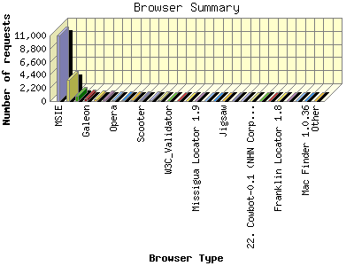
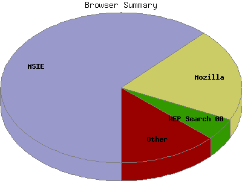

Report generated by Analog 5.91beta1 and Report Magic 2.21
|
Web Server Statistics for "Harish Narayanan (hnarayan) - November 2003" Report generated by Analog 5.91beta1 and Report Magic 2.21 |
The Browser Summary identifies the most popular web browsers used to visit
this site.
Browsers are broken down by recognized categories such as
Netscape Navigator/Communicator, Microsoft Internet Explorer, WebTV, Opera
and the like. Within each category is also a subgroup by version number
such as 'MSIE 5.0' or 'Netscape 4.5'.
This report shows all results. This report is sorted by number of requests.


| Browser Type | Number of requests | Number of bytes transferred | Percentage of the bytes | Percentage of the requests | |
|---|---|---|---|---|---|
| 1. | MSIE | 10,975 | 146.267 MB | 53.97% | 62.11% |
| MSIE/6 | 8,915 | 126.506 MB | 46.67% | 50.46% | |
| MSIE/5 | 2,053 | 19.730 MB | 7.28% | 11.62% | |
| MSIE/4 | 5 | 32.270 KB | 0.01% | 0.03% | |
| 2. | Mozilla | 3,516 | 38.818 MB | 14.32% | 19.90% |
| Mozilla/1 | 3,414 | 34.836 MB | 12.85% | 19.32% | |
| 3. | WEP Search 00 | 834 | 18.760 MB | 6.92% | 4.72% |
| 4. | Galeon | 452 | 9.814 MB | 3.62% | 2.56% |
| Galeon/1 | 452 | 9.814 MB | 3.62% | 2.56% | |
| 5. | Netscape | 366 | 5.729 MB | 2.11% | 2.07% |
| Netscape/7 | 258 | 4.696 MB | 1.73% | 1.46% | |
| Netscape/4 | 64 | 200.497 KB | 0.07% | 0.36% | |
| Netscape/6 | 44 | 857.310 KB | 0.31% | 0.25% | |
| 6. | W3C-checklink | 351 | 750.996 KB | 0.27% | 1.99% |
| W3C-checklink/3 | 351 | 750.996 KB | 0.27% | 1.99% | |
| 7. | Opera | 201 | 3.508 MB | 1.29% | 1.14% |
| Opera/7 | 197 | 3.501 MB | 1.29% | 1.11% | |
| 8. | Googlebot-Image | 190 | 22.118 MB | 8.16% | 1.07% |
| 9. | Netscape (compatible) | 158 | 2.724 MB | 1.00% | 0.89% |
| 10. | Scooter | 126 | 12.312 MB | 4.54% | 0.71% |
| Scooter/3 | 126 | 12.312 MB | 4.54% | 0.71% | |
| 11. | Googlebot | 91 | 1.624 MB | 0.60% | 0.52% |
| Googlebot/2 | 91 | 1.624 MB | 0.60% | 0.52% | |
| 12. | Safari | 79 | 432.074 KB | 0.16% | 0.45% |
| Safari/85 | 54 | 314.526 KB | 0.11% | 0.31% | |
| Safari/100 | 25 | 117.548 KB | 0.04% | 0.14% | |
| 13. | W3C_Validator | 57 | 1.686 MB | 0.62% | 0.32% |
| W3C_Validator/1 | 57 | 1.686 MB | 0.62% | 0.32% | |
| 14. | Konqueror | 44 | 235.823 KB | 0.09% | 0.25% |
| Konqueror/3 | 44 | 235.823 KB | 0.09% | 0.25% | |
| 15. | Java | 36 | 756.862 KB | 0.27% | 0.20% |
| Java/1 | 36 | 756.862 KB | 0.27% | 0.20% | |
| 16. | Missigua Locator 1.9 | 33 | 720.930 KB | 0.26% | 0.19% |
| 17. | IUS Spder Tch | 32 | 767.871 KB | 0.28% | 0.18% |
| 18. | River Valley Inc | 32 | 702.475 KB | 0.25% | 0.18% |
| 19. | Jigsaw | 26 | 53.092 KB | 0.02% | 0.15% |
| 20. | Class of 04 | 16 | 351.936 KB | 0.13% | 0.09% |
| 21. | ia_archiver | 13 | 2.440 MB | 0.90% | 0.07% |
| 22. | Cowbot-0.1 (NHN Corp. | 9 | 229.860 KB | 0.08% | 0.05% |
| Cowbot-0.1 (NHN Corp. / | 9 | 229.860 KB | 0.08% | 0.05% | |
| 23. | contype | 7 | 0.000 B | 0.00% | 0.04% |
| 24. | Green Research, Inc. | 5 | 95.144 KB | 0.03% | 0.03% |
| 25. | Franklin Locator 1.8 | 4 | 80.104 KB | 0.03% | 0.02% |
| 26. | MSProxy | 4 | 0.000 B | 0.00% | 0.02% |
| 27. | FAST-WebCrawler | 3 | 58.091 KB | 0.02% | 0.02% |
| FAST-WebCrawler/3 | 3 | 58.091 KB | 0.02% | 0.02% | |
| 28. | Mac Finder 1.0.36 | 2 | 38.002 KB | 0.01% | 0.01% |
| 29. | Moozilla | 2 | 336.000 B | 0.00% | 0.01% |
| 30. | Zao | 1 | 37.232 KB | 0.01% | 0.01% |
| 31. | Dattatec.com-hosting-Econonico-Menos-de-10-Dolares security_at_dattatec_dot_com | 1 | 19.786 KB | 0.01% | 0.01% |
| 32. | Test1.0 | 1 | 19.933 KB | 0.01% | 0.01% |
| 33. | gnome-vfs | 1 | 242.000 B | 0.00% | 0.01% |
| gnome-vfs/2 | 1 | 242.000 B | 0.00% | 0.01% | |
| 34. | Java1.4.0 | 1 | 18.957 KB | 0.01% | 0.01% |
This report was generated on January 18, 2004 18:29.
Report time frame November 1, 2003 00:43 to November 30, 2003 23:58.
| Web statistics report produced by: | |
 Analog 5.91beta1 Analog 5.91beta1 |  Report Magic 2.21 Report Magic 2.21 |